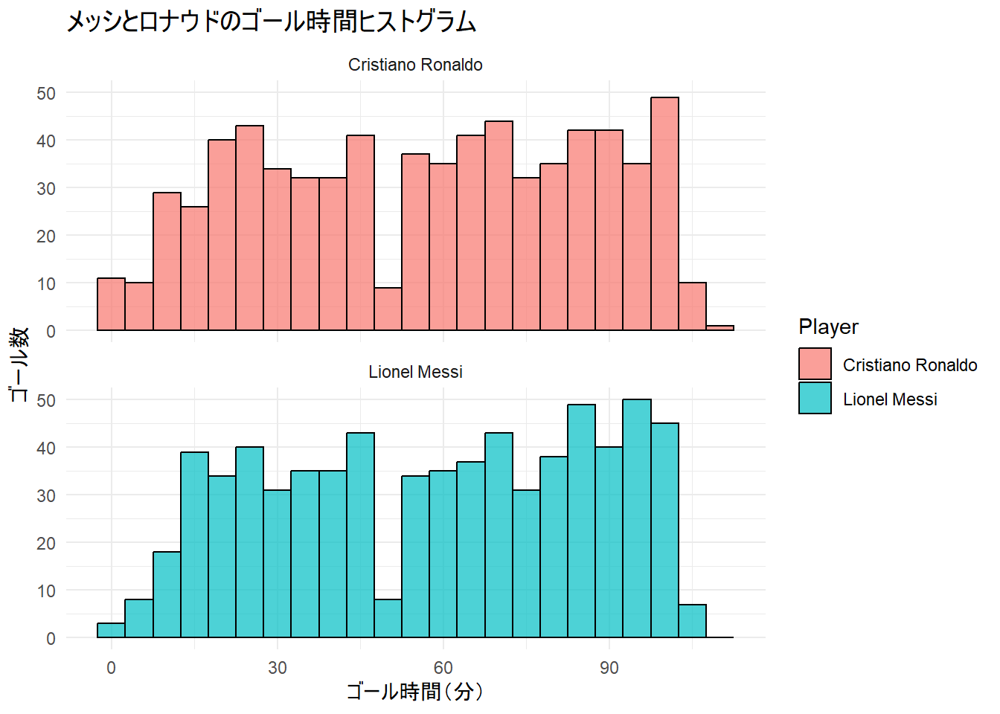
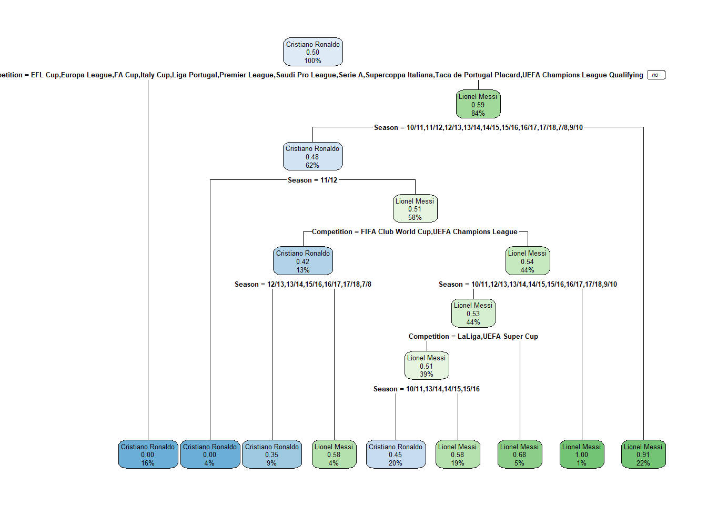
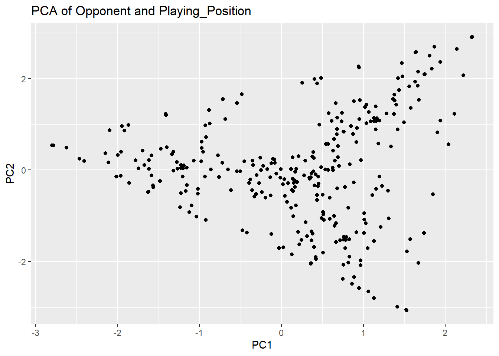
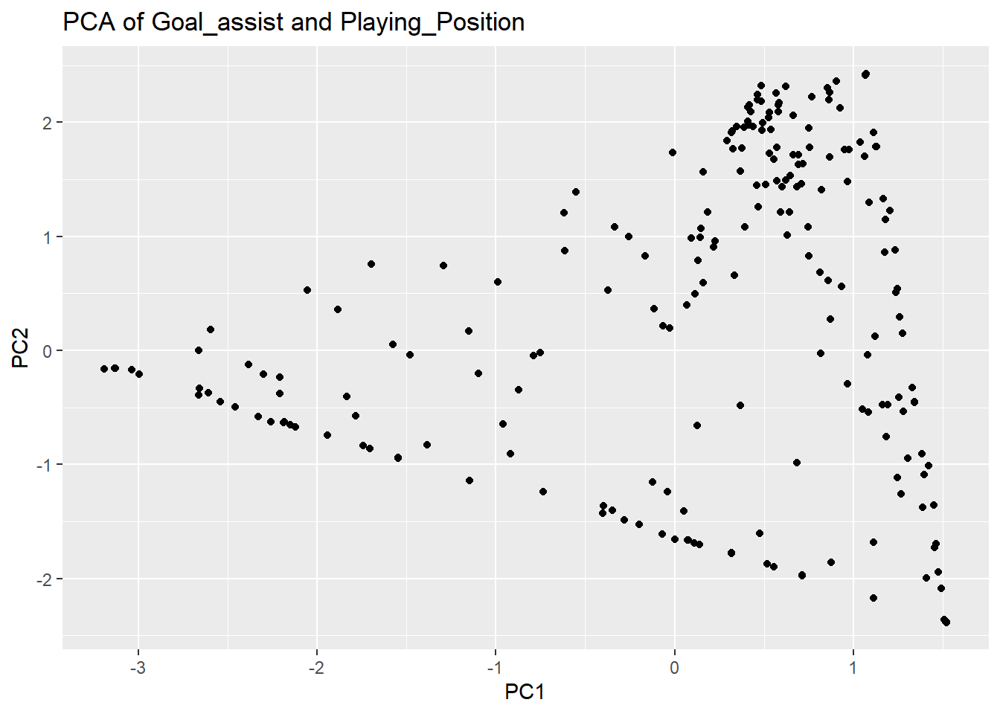
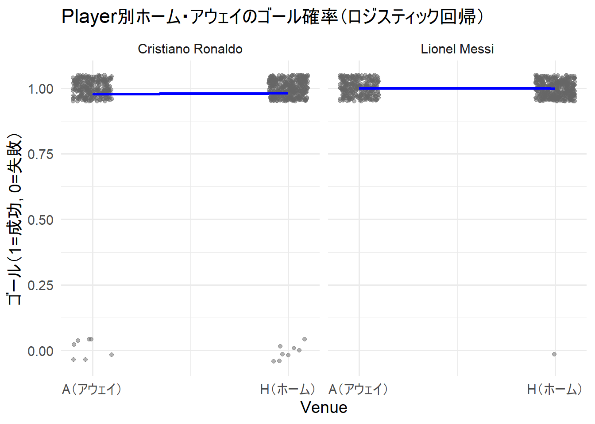
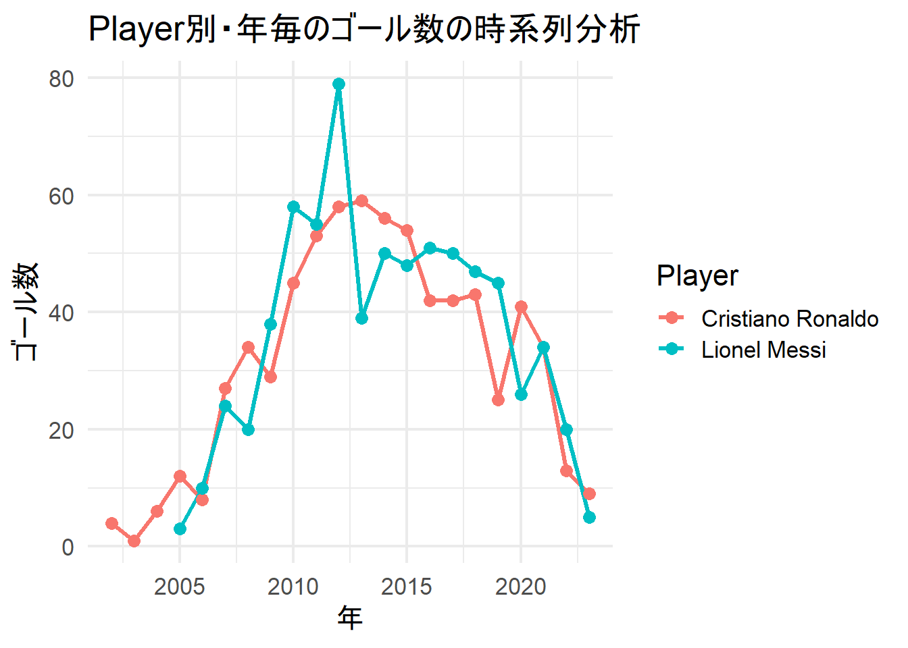

library(DT)
data <- read.csv("./data/data.csv", stringsAsFactors = TRUE)
datatable(head(data,5),options = list(autoWidth = TRUE))Home Page
メッシとクリロナのクラブゴールデータ分析の研究
研究目的
メッシとロナウドのゴールを決めやすい時間、誰からのアシストが多いか、どういう決め方が多いかなどのデータから2人の得意なプレーや敵チームとの相性や特徴を調べること
研究期間
2025年4月1日~2025年7月4日
研究内容
ゴールを決めた時間のヒストグラムと回帰分析
データ全体の決定木
アシストした人との主成分分析
ホームとアウェイの時のゴールのロジスティック回帰分析
年毎のゴールの時系列分析
データ
メッシとロナウドのクラブゴールデータ

ライブラリの読み込み
library(ggplot2)
library(dplyr)
次のパッケージを付け加えます: 'dplyr' 以下のオブジェクトは 'package:stats' からマスクされています:
filter, lag 以下のオブジェクトは 'package:base' からマスクされています:
intersect, setdiff, setequal, unionlibrary(readr)
library(gridExtra)
次のパッケージを付け加えます: 'gridExtra' 以下のオブジェクトは 'package:dplyr' からマスクされています:
combineゴール時間(分)のヒストグラム
# 列名確認（例: "Player", "Minute" など）
colnames(data) [1] "Player" "Season" "Competition" "Matchday"
[5] "Date" "Venue" "Club" "Opponent"
[9] "Result" "Playing_Position" "Minute" "At_score"
[13] "Type" "Goal_assist" # 数値に変換
data <- data %>%
mutate(
Minute = as.numeric(Minute),
Player = as.factor(Player)
)
# 使用するプレイヤー名を指定（実際の名前に合わせてください）
selected_players <- c("Lionel Messi", "Cristiano Ronaldo")
# プレイヤーをフィルター
filtered_data <- data %>% filter(Player %in% selected_players)
# ヒストグラム作成
ggplot(filtered_data, aes(x = Minute, fill = Player)) +
geom_histogram(binwidth = 5, color = "black", alpha = 0.7) +
facet_wrap(~ Player, ncol = 1) +
labs(
title = "メッシとロナウドのゴール時間ヒストグラム",
x = "ゴール時間（分）",
y = "ゴール数"
) +
theme_minimal()
決定木
#install.packages("rpart")
#install.packages("rpart.plot")
library(rpart)
library(rpart.plot)
# 欠損値を含む行をすべて除去
data_no_na <- na.omit(data)
tree <- rpart(Player ~ Competition + Season , data = data, method = "class")
# 可視化
rpart.plot(tree)
対戦相手とプレイポジションの主成分分析
# 欠損値除去
data_no_na <- na.omit(data[, c("Opponent", "Playing_Position")])
# ダミー変数化
data_dummy <- model.matrix(~ Opponent + Playing_Position - 1, data = data_no_na)
# 主成分分析
pca <- prcomp(data_dummy, scale. = TRUE)
# プロット
autoplot <- function(pca) {
df <- as.data.frame(pca$x)
ggplot(df, aes(x = PC1, y = PC2)) +
geom_point() +
labs(title = "PCA of Opponent and Playing_Position")
}
autoplot(pca)
アシスト選手とプレイポジションの主成分分析
# 欠損値除去
data_no_na <- na.omit(data[, c("Goal_assist", "Playing_Position")])
# ダミー変数化
data_dummy <- model.matrix(~ Goal_assist + Playing_Position - 1, data = data_no_na)
# 主成分分析
pca <- prcomp(data_dummy, scale. = TRUE)
# プロット
autoplot <- function(pca) {
df <- as.data.frame(pca$x)
ggplot(df, aes(x = PC1, y = PC2)) +
geom_point() +
labs(title = "PCA of Goal_assist and Playing_Position")
}
autoplot(pca)
ホーム・アウェイのゴール確率（ロジスティック回帰
# ゴールフラグを作成
data$Goal_flag <- ifelse(is.na(data$Type) | data$Type == "", 0, 1)
# VenueがHまたはAのデータのみ抽出
data_ha <- subset(data, Venue %in% c("H", "A"))
# 必要なら欠損値除去
data_ha <- na.omit(data_ha)
# Venueを0/1に変換
data_ha$Venue_num <- ifelse(data_ha$Venue == "H", 1, 0)
ggplot(data_ha, aes(x = Venue_num, y = Goal_flag)) +
geom_jitter(width = 0.1, height = 0.05, alpha = 0.5, color = "gray40") +
stat_smooth(method = "glm", method.args = list(family = "binomial"), se = FALSE, color = "blue", size = 1.2) +
scale_x_continuous(breaks = c(0, 1), labels = c("A（アウェイ）", "H（ホーム）")) +
labs(title = "Player別ホーム・アウェイのゴール確率（ロジスティック回帰）",
x = "Venue", y = "ゴール（1=成功, 0=失敗）") +
facet_wrap(~ Player) +
theme_minimal(base_size = 14)Warning: Using `size` aesthetic for lines was deprecated in ggplot2 3.4.0.
ℹ Please use `linewidth` instead.`geom_smooth()` using formula = 'y ~ x'
年毎のゴール数の時系列分析
# 年を抽出
data$Year <- substr(data$Date, 1, 4)
# ゴールフラグ（TypeがNAまたは空でなければ1）
data$Goal_flag <- ifelse(is.na(data$Type) | data$Type == "", 0, 1)
# Player別・年別ゴール数を集計
goal_by_player_year <- data %>%
group_by(Player, Year) %>%
summarise(Goals = sum(Goal_flag), .groups = "drop")
# グラフ描画
ggplot(goal_by_player_year, aes(x = as.numeric(Year), y = Goals, color = Player, group = Player)) +
geom_line(size = 1.2) +
geom_point(size = 3) +
labs(title = "Player別・年毎のゴール数の時系列分析",
x = "年",
y = "ゴール数") +
theme_minimal(base_size = 16)